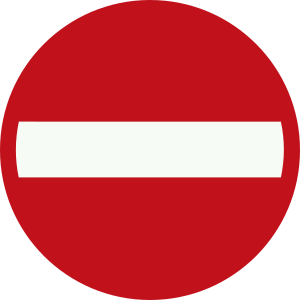
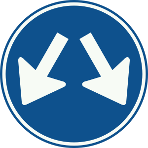

open task editor

delete element
add element above
add element below
add element here

add branch
cancel
variable name
variable value
{{ key }}
no variables existing
{{ log }}
no logs available yet